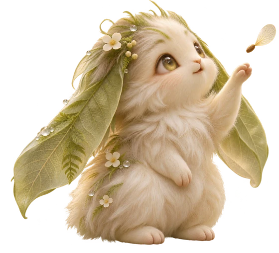

THE LIVING LEARNING LAB / FIELD GUIDE
Welcome to Lumen & Loam
A soft place for serious curiosity.
Lumen & Loam is a growing learning lab and a practical study space. It brings the big questions about being human together with tools that help you sit down, explore, take notes, and keep going.

Why this place was created
Curiosity rarely stays inside one subject. A question about why people make a choice can lead to psychology, ethics, culture, economics, or the design of an AI system. This site was created to give that kind of wandering curiosity a useful home: somewhere to follow a question, connect what you learn, and keep your thoughts from getting scattered.
The forest theme makes progress feel like tending something alive. A question is a seed. A small task is a sprout. Notes become leaves, and connections between ideas become branches. You can grow a little at a time.
What you can study here
The Canopy Lab begins with philosophy, ethics, logic, metaphysics, aesthetics, epistemology, psychology, sociology, behavioral economics, anthropology, health, nutrition, fitness, history, and human interaction with technology and AI. Mathematics and the natural sciences have space to grow too.
The current class pages contain orientation questions and a place for saved stars and highlights. Full lessons will be added as the learning lab develops.
Start with one small seed
- Choose your light. The large moon button near the top switches between the warm Day Canopy and StarFern night mode. Your choice is remembered. Forest motion can be turned off.
- Pick a path. Open Canopy Lab, choose a topic, and explore its orientation cards. Star or highlight a card to save it for later.
- Plant a task. Add a small next step in the Task Garden or beside the focus timer. Choose a class or your own topic, an emoji, and a color. You can edit or delete it later.
- Make room to focus. Choose a task in the timer's Working on menu, start a focus block, and optionally play a soundscape. The default rhythm is 25 minutes of focus, a 5-minute short break, and a 15-minute long break after four focus blocks. Change it in Settings & data.
- Catch your thoughts. Open Notebooks or use a task's note button. Notes can belong to a class notebook or a notebook you create, and can link back to a task.
- Notice what grew. Check off a task to date the little win and add a leaf beside the Mossling. Use Completed to review progress and the Calendar to plan what comes next.
Your calendar and notebooks
The calendar has month, week, and hourly day views. Add a study block with a topic, color, start time, and duration. In week or day view you can edit or delete a planned block. Completed tasks and newly saved notes appear on the calendar automatically.
Every starting class has a notebook. You can also make one with its own name, cover color, and icon. Notes keep their creation and edit times, and appear newest first inside a notebook.
Keep your little forest safe
Your study records are saved in this browser on this device. They are not published to GitHub and do not automatically sync between computers or between the private and public editions.
Open Settings & data → Export to download a backup. On another computer, open the site and use Import to restore it. Import replaces that browser's current study data, so export first if you want to keep both copies. Clearing browser storage can remove local records.
The creatures and their secrets
Mosslings tend the Task Garden; completed tasks grow little leaves. Visit the Creature Glade on Study home to meet three playful guides: Glimmermoth has eight constellation memory levels, Hushhare has matching games with four, six, and eight pairs, and Dewfawn leads a three-clearing lost-seed clue trail. The moth near the timer also opens its game.
Levels, best pair scores, seed-trail records, and discovery dates save with your local study data and are included in JSON backups. Clear a trail with each of the three friends to uncover a shared secret. The moon offers questions, and the Mossling has little greetings. All discoveries are optional.
Make room for the forest
On a desktop, use the arrow at the top of the navigation links to slide into a compact icon rail. The home logo and moon stay within reach, and hovering an icon shows its name. Expand again whenever you like. On a phone, use the hamburger button to open the links; choosing a link closes the menu. Settings & data is inside that menu. Your desktop rail preference is remembered.
Why Lumen & Loam?
Lumen is the Latin word for light and a scientific unit for visible light. It represents illumination: understanding an idea more clearly. Loam is soil made from sand, silt, and clay. It represents the conditions learning needs: time, practice, care, and connections. Together, the name suggests understanding that grows.
Day Canopy
Warm cream, moss, a quiet stream, pearlescent leaves, and clear glass catching the sunlight.
StarFern
The same forest after moonrise: indigo, silver, glowing flowers, mushrooms, and curious lights among the leaves.
Growing next
Published lessons, substantial shuffled quizzes with dated notebook results, editable flashcards, and importable class packs are planned next. Creature teachers and stronger links between subjects will give each class its own identity. These learning features are not available yet. The first priority remains a useful, welcoming place to learn.